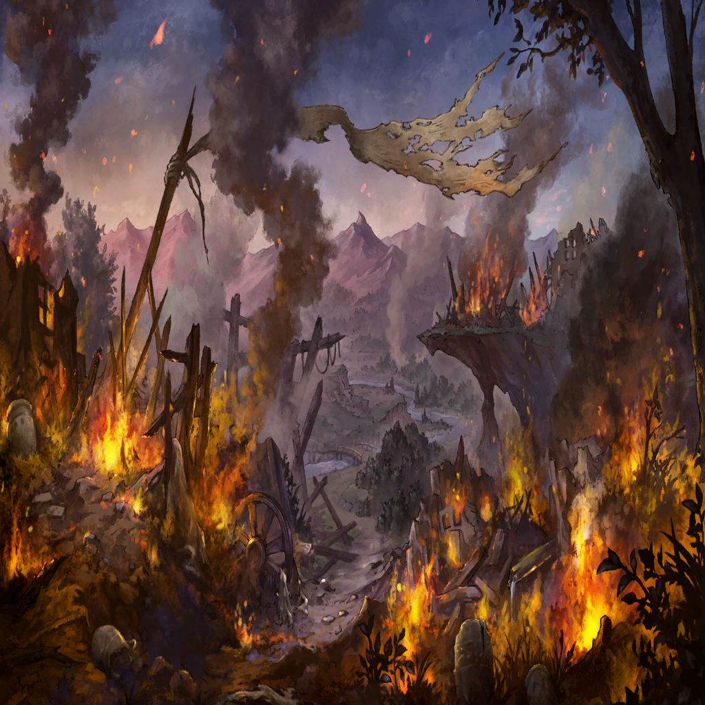

メラ
メラ
こんなに堕罪者が多い場所で
普通の人って暮らせるもの？

ワギナオ

ニムル
ちょうどここに、結界の起点が――
ニムル
いや、だがこれは…？
メラ
ニムル
強い力を持った何者かが、
ここで争ったような…
ワギナオ
ニムル
ニムル
ワギナオ
ニムル
ニムル
争った形跡や血痕がなさ過ぎる
ニムル
何か危険を察知して、避難したのか…？
里を守り続けていたかったのですが
ニムル
このエウラリア、皆様の到来を
一日千秋の思いで待ちわびておりました

エウラリア
すっごく大変だったんだからね？
| |
| |
| 堕罪者 | ガァァ… |
メラ |
敵が、多い！ |
メラ |
お兄さん、本当にこっちで合ってる？ こんなに堕罪者が多い場所で 普通の人って暮らせるもの？ |
ワギナオ |
…それは、確かにそうだな |
ニムル |
いや、方角は合っているはずだ ちょうどここに、結界の起点が―― |
ニムル |
見つけた…！ いや、だがこれは…？ |
メラ |
どうしたの、お兄さん |
ニムル |
…結界のマギルに、揺らぎがある 強い力を持った何者かが、 ここで争ったような… |
ワギナオ |
まさか―― |
ニムル |
…急ごう |
|  | |
ニムル |
… |
ワギナオ |
一足遅かった…のか？ |
ニムル |
いや… |
ニムル |
死体は穢れに呑まれたにしても、 争った形跡や血痕がなさ過ぎる |
ニムル |
生活痕も、まだ新しいな 何か危険を察知して、避難したのか…？ |
| ？？？ | そう――本来ならば皆様が訪れるまで、 里を守り続けていたかったのですが |
ニムル |
…！ その声は |
| ？？？ | よくぞ戻られました、セフィラの族長殿 このエウラリア、皆様の到来を 一日千秋の思いで待ちわびておりました |
エウラリア |
や～っと来たぁ…本当にもう、 すっごく大変だったんだからね？ |